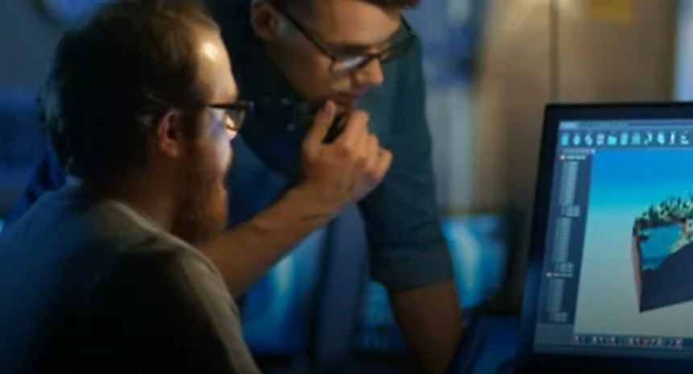

01
Saluran Masuk
Pompa Wasser WD-101E & Pipa Ø 45 mm
Pompa celup 220 V / 100 W menyirkulasikan air dari tangki bawah Ø 520 mm menuju bak penenang atas melalui pipa dorong.
Simulator PLTA vortex skala laboratorium yang mengubah aliran air berketinggian rendah menjadi listrik, tanpa bendungan.
Banyak aliran air kecil punya tinggi jatuh rendah, sehingga tidak bisa memutar turbin biasa. Vortex Hydro memakai pusaran air di dalam basin untuk mengubahnya menjadi listrik, tanpa bendungan.

Enam bagian utama dalam rangkaian sirkulasi air tertutup dan konversi energi listrik prototipe.
Pompa celup 220 V / 100 W menyirkulasikan air dari tangki bawah Ø 520 mm menuju bak penenang atas melalui pipa dorong.
Meredam turbulensi aliran lalu mengarahkan air melewati saluran akrilik miring yang menyempit dari 0,416 m ke 0,28 m.
Kincir berdiameter 330 mm dengan lebar sudu 250 mm menangkap dorongan aliran air untuk menghasilkan torsi mekanik.
Poros utama menembus sekat ke zona kering, memutar transmisi pulley Ø 270 mm ke Ø 67,5 mm dengan V-belt step-up.
Unit generator magnet permanen mengubah putaran yang telah dinaikkan rasionya menjadi daya listrik arus searah (DC).
Listrik disalurkan untuk menyalakan 2 unit lampu LED (masing-masing 12 V / 5 W), sementara air jatuh kembali ke tangki.
Diagram penampang interaktif 8 komponen, daftar spesifikasi alat, dan kalkulator daya mikro-hidro.
Parameter desain teknis, tahapan fabrikasi & metodologi pengujian laboratorium, serta daftar FAQ.
Susunan pengurus inti dan 7 divisi teknis: Modeling, Mat Model, Software, Electrical, Mekanikal, Perlengkapan, dan PDD.
Perancangan, simulasi, dan pemrograman proyek ini dikerjakan dengan empat perangkat lunak berikut.
 AutoCAD
Gambar Kerja & CAD
AutoCAD
Gambar Kerja & CAD
 MATLAB
Pemodelan Matematis
MATLAB
Pemodelan Matematis
 VS Code
Web & Dashboard
VS Code
Web & Dashboard
Kami merancang, membangun, dan menguji simulator PLTA Vortex skala laboratorium secara mandiri. Air dipompa ke bak penenang, mengalir di saluran miring, lalu memutar kincir yang menggerakkan generator.
Prinsip konversi energi tiga tahap dari sirkulasi air ber-head rendah hingga menghasilkan daya listrik DC.
Pompa mengalirkan air dari tangki bawah menuju bak penenang (headbox) secara kontinu.
Saluran pengarah menyempitkan aliran untuk memutar sudu turbin dan poros utama.
Transmisi pulley 1:4 memutar generator DC untuk mengisi baterai dan menyalakan beban LED.
Klik bagian pada gambar untuk melihat fungsinya.
Menampung air yang berputar. Air dari kincir jatuh kembali ke sini.
Menyedot air dari tangki lalu mendorongnya naik ke headbox.
Mengalirkan air ke atas. Flow meter membaca debitnya.
Menenangkan air supaya aliran halus sebelum masuk saluran.
Menyempitkan dan mengarahkan air tepat ke sudu kincir.
Diputar oleh air untuk menggerakkan generator.
Air bekas memutar kincir jatuh kembali ke tangki.
Pulley menaikkan putaran, generator mengisi baterai untuk lampu LED.
Komponen utama yang dipakai pada prototipe simulator.
Jumlah1 unit
Unit pembangkit daya
Jumlah2 pcs
Beban tegangan 12 V, daya 5 W per unit (total 10 W)
Jumlah1 unit
Tegangan 220 V / 50 Hz, daya 100 W
Jumlah1 set
Diameter ±45 mm pada jalur sirkulasi utama
Hitung estimasi daya mekanik dan listrik berdasarkan persamaan fluida P = ρ · g · Q · H · η.
Bekerja pada tinggi jatuh yang kecil.
Konstruksi mudah dan murah dirawat.
Tidak memerlukan bendungan besar.
Dimensi basin dan turbin.
Dibuat dan diuji kinerjanya.
Untuk dipelajari kelas berikutnya.
Parameter dimensi prototipe, tahapan perancangan & pengujian laboratorium, serta jawaban atas pertanyaan teknis yang sering diajukan.
Data ukuran mekanis, sistem hidrolik, dan komponen kelistrikan pada simulator laboratorium.
| Parameter | Spesifikasi / Nilai | Keterangan Teknis |
|---|---|---|
| Ukuran rangka utama, zona basah (panjang × lebar) | 2,0 × 0,8 m | Rangka penyangga utama saluran atas dan tangki bawah |
| Diameter tangki penampung | Ø 520 mm | Silinder penampung air sirkulasi tertutup |
| Pompa Celup Air Wasser WD-101E | 220 V / 50 Hz · 100 W | Menyirkulasikan air lewat pipa dorong Ø 45 mm |
| Lebar saluran (masuk → depan kincir) | 0,416 m → 0,280 m | Saluran akrilik miring yang menyempit ke arah sudu |
| Diameter kincir | Ø 330 mm (6 sudu) | Lebar sudu 250 mm pada poros utama stainless Ø 30 mm |
| Rasio putaran poros : generator | 1 : 4 (Step-up) | Transmisi pulley Ø 270 mm ke Ø 67,5 mm dengan V-belt |
| Generator XD 3240 | 1 unit (DC) | Dipasang di zona kering di balik sekat pelindung cipratan |
| Beban listrik (lampu LED) | 2 × 5 W (12 V · Total 10 W) | Disuplai melalui baterai 12 V dan pengontrol pengisian |
Alur kerja tim mulai dari simulasi komputer hingga pengukuran langsung di laboratorium.

Tahap 01Membuat desain 3D dan gambar kerja teknik untuk sistem sirkulasi air tertutup menggunakan AutoCAD, ANSYS Fluent, dan MATLAB.
Tahap 02
Aliran sungai tidak mungkin dibawa ke kampus, jadi pompa mengalirkan air dari tangki penampung bawah secara terus-menerus menuju bak penenang (headbox) dan saluran miring yang menyempit.
 Tahap 03
Tahap 03
Poros kincir menembus dinding sekat ke zona kering, lalu terhubung ke generator lewat pulley dan belt 1:4 untuk menghasilkan listrik.
Setelah semua komponen terpasang, kami mengukur debit air, kecepatan putaran turbin (RPM), dan daya listrik yang keluar. Teori dan rumus Mekanika Fluida pun terbukti secara nyata.
Jawaban ringkas tentang tujuan proyek, prinsip kerja turbin, dan cara membaca data prototipe.
Vortex Hydro adalah simulator PLTA Vortex skala laboratorium yang kami rancang, bangun, dan uji secara mandiri. Aliran air dari bak penenang memutar kincir dan menggerakkan generator.
Pompa mengalirkan air dari tangki penampung ke bak penenang (headbox), lalu air meluncur di saluran miring yang menyempit dan memutar kincir 6 sudu. Poros kincir terhubung lewat pulley dan belt ke generator untuk menghasilkan listrik.
Aliran sungai tidak mungkin dibawa langsung ke kampus. Karena itu pompa mengalirkan air secara terus-menerus dari tangki penampung bawah ke bak penenang, di atas rangka berukuran 2 × 0,8 meter.
Setelah semua komponen terpasang, kami melakukan pengujian langsung dengan mengukur debit air, kecepatan putaran turbin (RPM), dan daya listrik yang keluar, untuk membuktikan teori dan rumus Mekanika Fluida.
Tidak. Konsep proyek dirancang untuk memanfaatkan aliran dengan tinggi jatuh rendah dan tidak memerlukan bendungan besar. Kinerja tetap bergantung pada kondisi aliran dan rancangan prototipe.
Tidak selalu. Dashboard menggunakan data simulasi secara bawaan. Nilai simulasi membantu menjelaskan cara kerja antarmuka dan bukan hasil pengujian lapangan. Data nyata memerlukan sumber sensor yang terhubung.
Daya dipengaruhi oleh debit air, tinggi jatuh, serta efisiensi turbin dan generator. Rumus pada Kalkulator Daya adalah model sederhana; hasil aktual perlu diverifikasi melalui pengujian.
Proyek ini menggunakan ANSYS Fluent, AutoCAD, MATLAB, dan VS Code untuk mendukung simulasi, perancangan, dan pemrograman.
Tim dapat dihubungi melalui halo@vortexhydro.id. Proyek ini dikembangkan di Universitas Negeri Malang.
Kolaborasi mahasiswa Teknologi Rekayasa Pembangkit Energi, Fakultas Vokasi, Universitas Negeri Malang dalam kepengurusan inti dan 7 divisi teknis.
Kondisi prototipe saat ini: sensor, tren, dan peringatan. Diperbarui setiap detik.
Tersimpan di browser ini saja.
Ketik minimal 2 huruf. Pintasan: Ctrl+K atau tombol /.